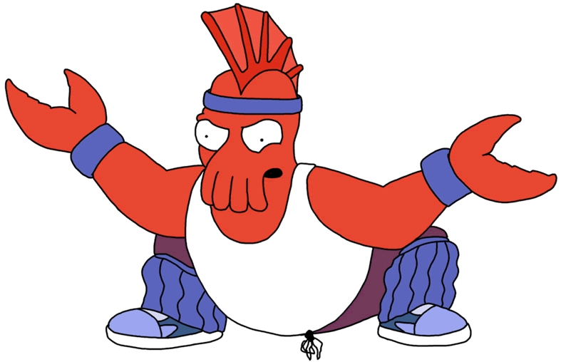

Akka - FSM
Finite-state machine
State(S) x Event(E) -> Actions (A), State(S')
If we are in state S and the event E occurs, we should perform the actions A and make a transition to the state S'.
Akka FSM
class Bender extends FSM[State, Data] {
startWith(Drinking, TargetList(List()))
when(Drinking) {
case Event(HumanSighted(human), TargetList(targets)) =>
goto(Killing) using TargetList(human :: targets)
}
when(Active, stateTimeout = 10 second) {
case Event(HumanKilled | StateTimeout, _) =>
goto(Drinking)
}
initialize()
}
State Machines - Actors
- Can receive messages
- Can send messages
- Can change their internal state
Akka FSM is just Domain Specific Language (DSL) for creation of FSMs in Akka.

Elements
class Bender extends FSM[State, Data] {
sealed trait State
case object Drinking extends State
case object Killing extends State
sealed trait Data
case class TargetList(targets: List()) extends Data
// Initial State
startWith(Drinking, TargetList(List()))
States
when(<name>[, stateTimeout = <timeout>])(stateFunction)
when(Drinking) {
case Event(HumanSighted(human), TargetList(targets)) =>
goto(Killing) using TargetList(human :: targets)
}
when(Active, stateTimeout = 10 second) {
case Event(HumanKilled | StateTimeout, _) =>
goto(Drinking)
}
whenUnhandled {
case Event(_, _) =>
stay replying ("I can't hear")
}
Events
Pattern matching on message and state data.
// Message - HumanSighted, Data - TargetList
case Event(HumanSighted(human), TargetList(targets)) =>
// Message HumanKilled or StateTimeout, Data - Anything
case Event(HumanKilled | StateTimeout, _) =>
// Any message, any data, Bender didn't care
case Event(_, _) =>
// If our state does not handle any messages
when(BoringState)(FSM.NullFunction)
Transitions
State function must return what to do next.
// Stay in current state
stay
// Go to next state
goto(NewState)
Also you can add modifiers like:
// How long to stay in state we stay or go to
forMax(duration)
// Change data in new state
using(data)
// Send reply to sender
replying(msg)
goto(Killing) using TargetList(human :: targets)
forMax (1 hour) replying("Kill all humans")
Actions
We can execute action on state transition
onTransition {
case Drinking -> Killing => pickupGuns
case Killing -> _ => hideBody
case x -> Drinking => pickupBeer
}
Timers
We can set arbitrary timers
// Create or change timer
setTimer(name, msg, interval, repeat)
// Cancel active timer
cancelTimer(name)
// Check if timer is active
isTimerActive(name)
// Start burbing then Drinking
onTransition {
case x -> Drinking => setTimer("burb", Burb, 5 second, repeat = true)
case Drinking -> x => cancelTimer("burb")
}
Death
FSM can be stopped in various of ways
// From inside
stop([reason[, data]])
// From outside
fsmActor ! PoisonPill
context stop fsmActor
We can also add hooks to our FSM
onTermination {
case StopEvent(FSM.Normal, state, data) => // ...
case StopEvent(FSM.Shutdown, state, data) => // ...
case StopEvent(FSM.Failure(cause), state, data) => // ...
}
Testing
We need to create special TestFSMRef actor
val fsm = TestFSMRef(new OurFSM())
Then we can drill inside our FSM with helper methods
// Get current state name
assert(fsm.stateName == OurFSM.Idle)
// Get our FSM State Data
assert(fsm.stateData == "OurData")
// Explicitly set State
fsm.setState(OurFSM.Active)
// Timer checks
assert(fsm.isTimerActive("timer"))
assert(fsm.isStateTimerActive())
fsm.cancelTimer("timer")
fsm.setTimer("timer2", "Ping", 5 seconds, repeat = true)
Lets code
We will implement messaging system using FSMs
Our system has two types of FSMs:
- Agent
- Connection
And we name it:
Bi Directional State Messaging
Get from GitHub - https://github.com/yoks/bdsm